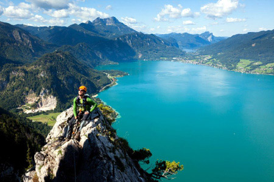

| tó neve | Attersee | Traunsee | Mondsee | Wolfgang-see | HallstatterSee | Velencei-tó |
|---|---|---|---|---|---|---|
| vízfelülete | 45-9 km2 | 24,5 2 | 14,2 2 | 12,8 2 | 8,6 2 | 25,8 2 |
| tszf. magassága | 469m | 423m | 481m | 538m | 508m | 100m |
| legnagyobb mélysége | 171m | 191m | 68m | 114m | 125m | 2m |
| legnagyobb városa | Seewalchen | Gmunden | Mondsee | St. Gilgen | Hallstatt | |
| egyedisége | legnagyobb | legmélyebb | legmelegebb | legszebb | leghidegebb | |
| fotó |  | |
|
|
|
|